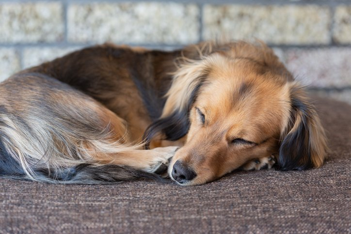
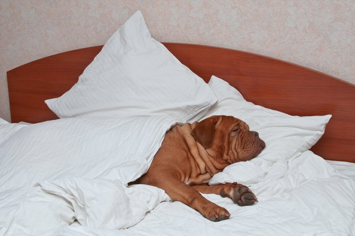

Πόσο ύπνο χρειάζονται οι σκύλοι;
Ύπνος. Όλοι τον έχουμε ανάγκη, άνθρωποι και σκύλοι εξίσου. Οι άνθρωποι χρειάζονται 6-8 ώρες ύπνου ημερησίως. Τι γίνεται όμως τους σκύλους; Πόσες ώρες ύπνου χρειάζονται; Ο τύπος και η μορφή του ύπνου τους είναι ίδιοι με των ανθρώπων;
Getty Images Plus / danaibe12
Είτε το πιστεύετε είτε όχι, ο ύπνος παραμένει ακόμα ένα νευρολογικό μυστήριο. Κανείς δεν ξέρει τον ακριβή λόγο για τον οποίο τα θηλαστικά κοιμούνται. Αυτό που ξέρουμε όμως, είναι ότι ο ύπνος συνάδει σε όλα τα είδη θηλαστικών και πτηνών. Αν και υπάρχουν περίπου 5.400 είδη θηλαστικών πάνω στην γη, τα μοτίβα του ύπνου, συμπεριλαμβανομένης της γρήγορης κίνησης των ματιών (REM/rapid eye movement) αλλά και της αργής φάσης, είναι εμφανώς παρόμοια σε όλα τα είδη θηλαστικών. Εξίσου παρόμοια, είναι τα μοτίβα που σημειώνονται σε ένα μηχάνημα EEG (ηλεκτροεγκεφαλογράφημα) - ένα μηχάνημα που καταγράφει εγκεφαλικά κύματα.
Getty Images Plus / gnome24
Η ανάγκη μας για ύπνο αλλάζει κατά τη διάρκεια της ζωής μας. Ακριβώς το ίδιο ισχύει και για τους φίλους μας τους σκύλους. Τα κουτάβια χρειάζονται παραπάνω ύπνο από τα ενήλικα σκυλιά, παρ’ όλα αυτά οι ηλικιωμένοι σκύλοι τείνουν να κοιμούνται περισσότερο.
Πώς προκύπτουν όμως αυτές οι αλλαγές; Τα κουτάβια μεγαλώνουν με πολύ μεγάλη ταχύτητα. Η ανάπτυξη απαιτεί έντονες «εκρήξεις» ενέργειας, μετά από τις οποίες ο οργανισμός πρέπει να ανακάμψει. Είναι φυσιολογικό για τα κουτάβια, να κοιμούνται έως και 20 ώρες τη μέρα. Αντίστοιχα, οι ηλικιωμένοι σκύλοι κοιμούνται παραπάνω λόγω της μείωσης του μεταβολικού τους ρυθμού. Αυτό, είναι ένα φυσιολογικό κομμάτι της ηλικιακής περιόδου που διανύει ένας ηλικιωμένος σκύλος. Παρ΄ όλα αυτά, είναι σημαντικό να σημειωθεί, ότι αυτή η γενικότερη «επιβράδυνση» της μεγάλης ηλικίας, μπορεί να σηματοδοτεί υποβόσκουσες παθήσεις, όπως η αρθρίτιδα ή ο καρκίνος. Για αυτό το λόγο, είναι συνετό να πραγματοποιούνται εξετάσεις ετησίως (ή ακόμα και κάθε 6 μήνες) στον κτηνίατρο, για να διασφαλίζεται ότι ο σκύλος σας δεν αντιμετωπίζει προβλήματα υγείας.
Η έγκαιρη αντιμετώπιση της αρθρίτιδας και άλλων παθήσεων, μπορούν να βελτιώσουν σημαντικά την ποιότητα ζωής των ηλικιωμένων σκύλων. Η φυσική δραστηριότητα, μπορεί επίσης να επηρεάσει το πρόγραμμα ύπνου των σκύλων. Οι σκύλοι εργασίας κοιμούνται λιγότερο από τους ανενεργούς σκύλους. Οι ανενεργοί σκύλοι μπορεί επίσης να παρουσιάσουν ασυνήθιστους κύκλους ύπνου/ξυπνήματος. Αυτό, μπορεί να προκύπτει επειδή πολλοί σκύλοι είναι μόνοι τους στο σπίτι κατά την διάρκεια της μέρας και αναπόφευκτα κοιμούνται. Όταν οι ιδιοκτήτες τους επιστρέφουν, ο σκύλος ενεργοποιείται. Η αδράνεια κατά τη διάρκεια της μέρας, μπορεί να οδηγήσει σε αϋπνία κατά τη διάρκεια της νύχτας, όταν όλο το σπίτι είναι ήσυχο.
Getty Images Plus / vitalytitov
Η ράτσα και το μέγεθος, είναι επίσης παράγοντες που επηρεάζουν τον ύπνο, αν και οι λόγοι για τους οποίους γίνεται αυτό δεν είναι τόσο ξεκάθαροι. Γενικά, οι σκύλοι από μεγαλόσωμες και γιγαντόσωμες ράτσες τείνουν να κοιμούνται περισσότερο από τις μικρόσωμες φυλές (Chihuahua/Mastiff). Αυτό μπορεί να οφείλεται στις υψηλότερες ενεργειακές ανάγκες που έχουν οι μεγαλύτεροι μύες και τα μεγαλύτερα ζωτικά όργανα. Πολλά ερωτήματα παραμένουν άλυτα όσο αναφορά τον ύπνο, αλλά ένα πράγμα είναι ξεκάθαρο… Όλοι τον χρειαζόμαστε!
Χρειάζεται να ορίσω συγκεκριμένη ώρα ύπνου για τον σκύλο μου;
Όλοι γνωρίζουμε, πως αν δεν κοιμηθούμε επαρκώς, η γνωστική μας ικανότητα μειώνεται. Ορίστε η ομορφιά του να είσαι σκύλος - μπορείς να κοιμηθείς οπουδήποτε, οποτεδήποτε!
Όπως όλα τα ζώα, οι σκύλοι έχουν ανάγκη κάποιων συγκεκριμένων ωρών ύπνου, εφόσον όμως δεν χρειάζεται να διαβάσουν, να γράψουν, να οδηγήσουν ή να χειριστούν μεγάλα και περίπλοκα μηχανήματα, δεν χρειάζεται να ανησυχείτε για το αν θα πρέπει να υπάρχει προκαθορισμένο πρόγραμμα ύπνου για αυτούς. Θα το κάνουν έτσι και αλλιώς από μόνοι τους. Ίσως, οι άνθρωποι χρειάζεται να πάρουμε μια σελίδα από το εγχειρίδιο ζωής του σκύλου μας και να ξεκουραζόμαστε όταν το σώμα μας το απαιτεί!
Ο σκύλος μου κοιμάται όλη την μέρα. Είναι φυσιολογικό;
Η αλήθεια είναι, πως ο ύπνος μεταβάλλεται δραματικά μεταξύ της κάθε μεμονωμένης περίπτωσης σκύλου, όπως και στον άνθρωπο. Μπορεί να υπάρχουν κάποιοι συσχετισμοί μεταξύ του ύπνου και της ράτσαςμεγέθους, αλλά τελικά, κάθε σκύλος είναι μοναδικός. Ο Δρ. William Thomas, νευρολόγος κτηνίατρος στο Πανεπιστήμιου του Tennessee, εκτιμά πως οι σκύλοι κοιμούνται το 48-58% της ζωής τους. Αν λοιπόν ο δικός σας σκύλος είναι δραστήριος και σε εγρήγορση όταν ξυπνάει, έχει όρεξη για φαγητό και όλα μοιάζουν φυσιολογικά, αλλά κοιμάται πολύ, ίσως απλά να χρειάζεται αυτόν τον επιπλέον ύπνο. Αν από την άλλη, το κουτάβι σας εκδηλώνει ληθαργικές τάσεις, έχει μειωμένη όρεξη για φαγητό ή παρουσιάζει ασυνήθιστες συμπεριφορές, είναι ώρα για κτηνιατρικό έλεγχο.
Copied with permission from ‘Whole Dog Journal’ for subscription information call: 800 829 9165 or visit our website at www.whole-dog-journal.com
Αρθρογράφος : Catherine Ashe, DVM
Μετάφραση : Δέσποινα Τρίτση
Επιμέλεια κειμένου : Ελένη Χούμη